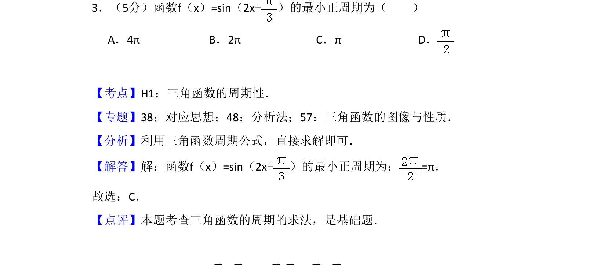
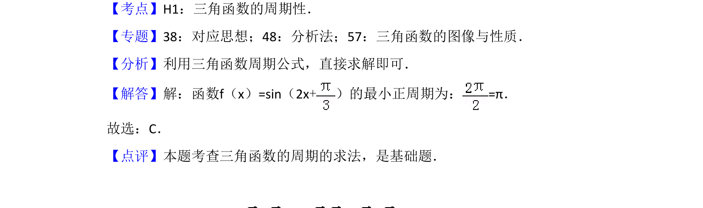

考点：三角函数周期性 周期公式 正弦函数

该题考查三角函数的最小正周期计算，利用周期公式直接求解。

📄 原 PDF 第 2 页：
素材/真题/吉林/2008-2024·（吉林）数学高考真题/2017年高考数学试卷（文）（新课标Ⅱ）（解析卷）.pdf
3．（5分）函数f（x）=sin（2x+）的最小正周期为（ ） A．4πB．2πC．πD．
【考点】H1：三角函数的周期性．菁优网版权所有 【专题】38：对应思想；48：分析法；57：三角函数的图像与性质． 【分析】利用三角函数周期公式，直接求解即可． 【解答】解：函数f（x）=sin（2x+）的最小正周期为：=π． 故选：C． 【点评】本题考查三角函数的周期的求法，是基础题．